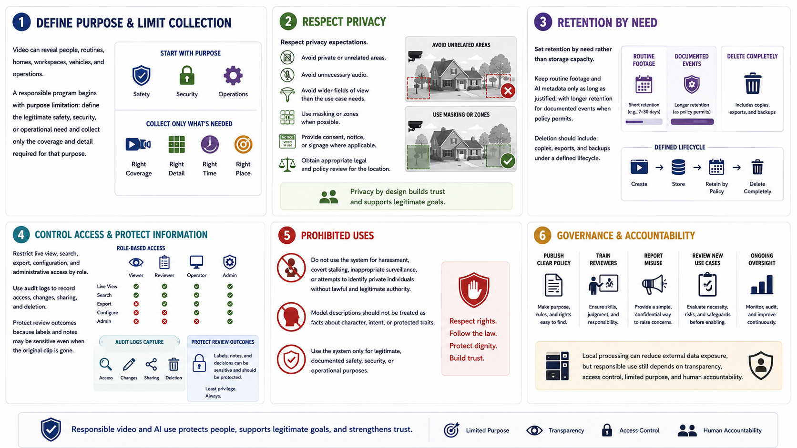

Privacy, Policy, and Responsible Use
Connecting to LMS... Progress: in progress

Narration
Video can reveal people, routines, homes, workspaces, vehicles, and operations. A responsible program begins with purpose limitation: define the legitimate safety, security, or operational need and collect only the coverage and detail required for that purpose.
Respect privacy expectations. Avoid private or unrelated areas, unnecessary audio, and wider fields of view than the use case needs. Use masking or zones when possible. Provide consent, notice, or signage where applicable, and obtain appropriate legal and policy review for the location.
Set retention by need rather than storage capacity. Keep routine footage and AI metadata only as long as justified, with longer retention for documented events when policy permits. Deletion should include copies, exports, and backups under a defined lifecycle.
Restrict live view, search, export, configuration, and administrative access by role. Use audit logs to record access, changes, sharing, and deletion. Protect review outcomes because labels and notes may be sensitive even when the original clip is gone.
Do not use the system for harassment, covert stalking, inappropriate surveillance, or attempts to identify private individuals without lawful and legitimate authority. Model descriptions should not be treated as facts about character, intent, or protected traits.
Publish clear policy, train reviewers, provide a way to report misuse, and review new use cases before enabling them. Local processing can reduce external data exposure, but responsible use still depends on transparency, access control, limited purpose, and human accountability.